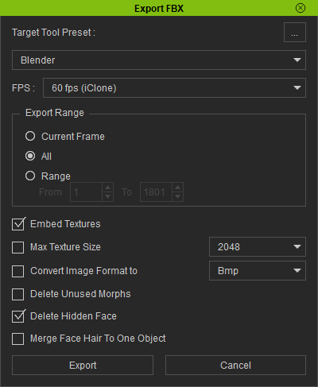

Basic Usage
Export Settings From Character Creator or iClone
Character Creator
In character creator, make any character you like and dress them up.
Export the character as FBX (Clothed Character). Set the target tool preset to Blender, The FBX options to Mesh and Motion. You can Embed the textures if you want, but it’s usually better not to as embedding the textures stores them in the FBX file where you can’t access them if you need to. Set the Include Motion to Current Pose and tick Delete Hidden Faces.

iClone
In iClone, select the character you wish to export and use the menu option File -> Export -> Export FBX
Set the target tool to Blender the animation range to whatever you need (set to All if in doubt). Leave the default selection of Embed Textures and Delete Hidden Faces.

Once the desired settings have been made, then press the ‘Export’ button to begin the export.
Import into Blender
Standard Import
Important
Do Not use the standard blender FBX importer to import characters from iClone or Character Creator. You will encounter all of the numerous problems which initially prompted the creation of this add-on.
Instead follow the method below.
In Blender and with a new Blend file, you may need to delete the default cube. Press N to show the tools panel and select the CC/iC Pipeline Tab. A number of settings can be adjusted before you import; please note: The default settings are fine for general use and you can Begin the Import with the defaults.
Import Settings
The Core Import Settings are presented as toggles at the top of the ‘Import/Export’ pane.
The available settings are as follows:
Lighting (Default: OFF) - Automatically set up lighting and render settings.
Physics (Default: OFF) - Automatically apply physics settings from the Character Creator import. See the Adding and Editing Physics section for more details.
Wrinkles (Default: ON) - Automatically generate expression wrinkles for the character if they are available in the export from Character Creator. See the Expression Wrinkles section for more details.
Rigify (Default: OFF) - Automatically ‘Rigify’ the character and retarget any animations in the character import onto the rigified character. See the Animation section for more details.
Additional (Optional) Import Settings are available in the ‘Importing’ foldout:
De-duplicate Materials (Default: ON) -Detects and re-uses duplicate textures and consolidates materials with same name, textures and parameters into a single material.
Auto Convert Generic (Default: ON) - When importing generic characters (GLTF, GLB, VRM or OBJ) automatically convert to Reallusion Non-Standard characters or props. Which sets up Reallusion import compatible materials and material parameters.
Limit Textures (Default: OFF) - Attempt to limit the number of imported textures to 8 or less. This is to attempt to address problems with OSX hardware limitations allowing only 8 active textures in a material. Note: This will mean the head material will be simpler than intended and no wrinkle map system is possible. Also this will force on texture channel packing to reduce textures on all materials, which will slow down imports significantly.
Pack Texture Channels (Default: OFF) - Pack compatible linear texture channels to reduce texture lookups. Note: This will significantly increase import time. Also Note: Wrinkle map textures are always channel packed to reduce texture load.
Reuse Channel Packs (Default: ON) - Reuse existing channel packs on material rebuild, otherwise re-bake the texture channel packs.
Use Edit Modifier (Default: ON) - Automatically set to use armature modifier in mesh edit mode for all armature modifiers in the character. (i.e. edit in place).
Preserve Volume (Default: OFF) - Automatically set use preserve volume for all armature modifiers in the character.
Begin the Import
Select any desired options (the default options are generally fine) and then import the character by pressing the Import Character button under the Importing header of the Import/Export panel.
Navigate to where you saved the exported the character from Character Creator or iClone, select the file and click the import button. Should you wish to import animations, then leave the Import Animation checkbox active in the file view where you navigate to the fbx to import.
This will import the character, set up the materials and (if the Lighting setting is enabled) set up some lighting similar to Character Creators default lighting to better view the character in the viewport.
You can hide the Armature if it’s getting in the way.
Build Settings Panel
In the Build Settings panel you can control the way the add-on builds the materials. These settings will be used either during a new import or when you next perform the Rebuild Materials action.

{kind=link}
{kind=link}
If you wish to enable or disable physics, then the Build Physics toggle in this panel can be used to enable/disable physics when the materials are next rebuilt (this mirrors the setting in the Core Import Settings).
Materials can be specifically built for either the Cycles or Eevee renderer, and the type of eye shader can be defined according to your needs.
Parallax Eyes use a single cornea material which is not subject to the Eevee engine’s limitations on sub surface scattering and the receiving of shadows.
SSR Eyes (Screen Space Refraction) use a transparent cornea material over an opaque eye (iris) material. When using Eevee, SSR materials do not receive shadows and do not have subsurface scattering.
Please see the Eye Refraction section for more information.
If the character was imported without physics enabled, then the Build Physics button in this panel can be used to quickly add all the physics elements from the CC/iC export.
(The Build Settings foldout is a convenient duplicate of the Additional (Optional) Import Settings described above).
Each of these settings can be changed at any time, but you must perform the Rebuild Materials step before they are incorporated into your character.
Object & Material Setup
In the Object & Material Setup panel any imported object can be easily selected to quickly adjust the build object type and material type for any object material.
The add-on attempts to detect the type and purpose of each object and material by analyzing the object and material names for certain keywords. Sometimes it gets this process wrong if the objects or materials have ambiguous names, but the detected settings can be corrected:
The Object Type allows you to specify what type of object and thus how to build the materials for that object.
The Material Type similarly allows you to specify what type of material.
These two settings will allow you to correct any mis-detected materials in the import. Typically only hair and clothing meshes will be (occasionally) wrongly detected.
The Basic and Advanced material options determine whether a standard PBR shader is used (i.e. BSDF) or a more complex shader.
Rebuild Materials
Once changes have been made to any of the above the Rebuild Advanced Materials button must be used to update the materials with the new settings.
The Rebuild Node Groups button will rebuild the shaders in line with the current version of the add-on. This can be used in cases where you have an old .blend file created with an earlier version of the add-on and you wish to update the shaders to the latest version. Or you can use it to reset any changes you may have made to the shaders. In either case, after performing a Rebuild Node Groups you must then use Rebuild Advanced Materials to complete the process.
Selection of a material in the Object and Material Setup pane will show all of the available settings in the Material Parameters panel (in much the same way as selection of the material in the Material Properties tab of the standard Properties panel would).
Material Parameters Panel
In the Material Parameters panel you can control how the various textures of the character interact and mix together to form the final appearance of the character. Each parameter can be adjusted and the materials will update in real time as you change the parameter sliders. For the most part these parameters take the same values as the material shader parameters in Character Creator.
The parameters displayed are context sensitive to the currently active selected object and material. Full details of the material parameters can be found here: Material Parameters.
Make any adjustments you wish to - these settings can all be revisited at any time.